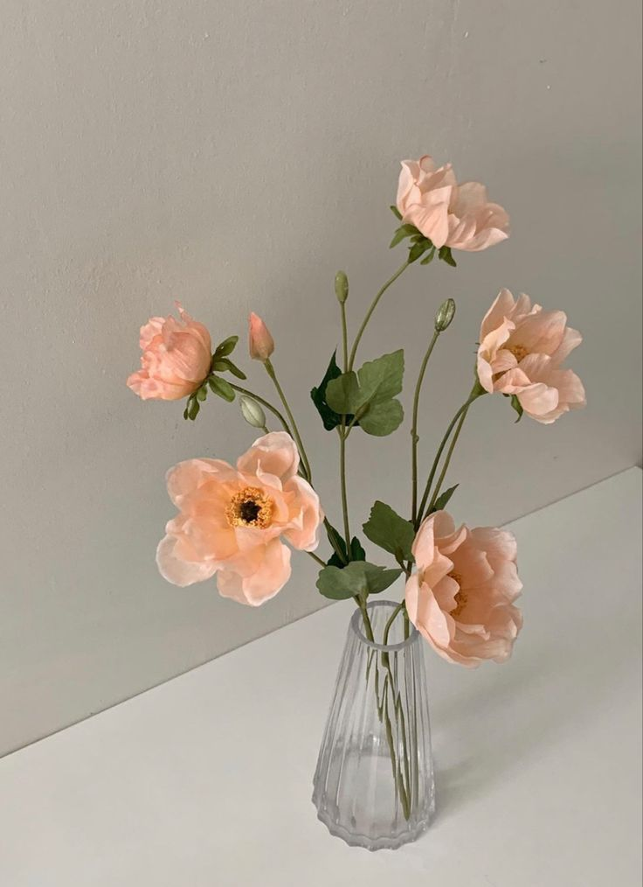
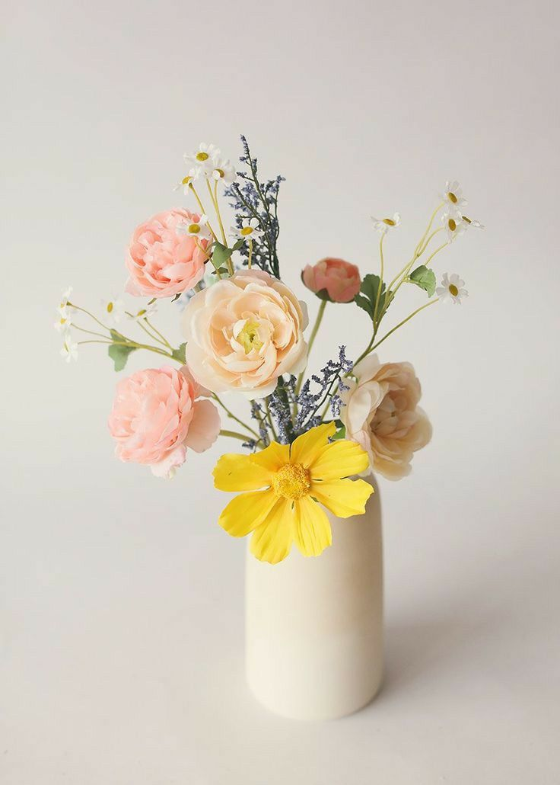
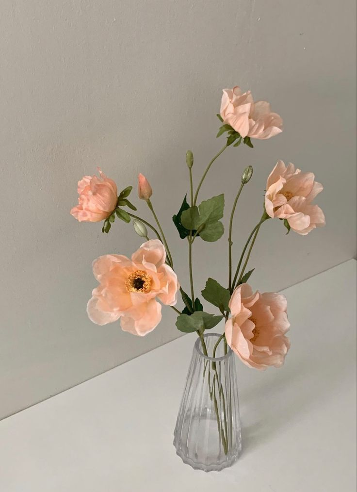
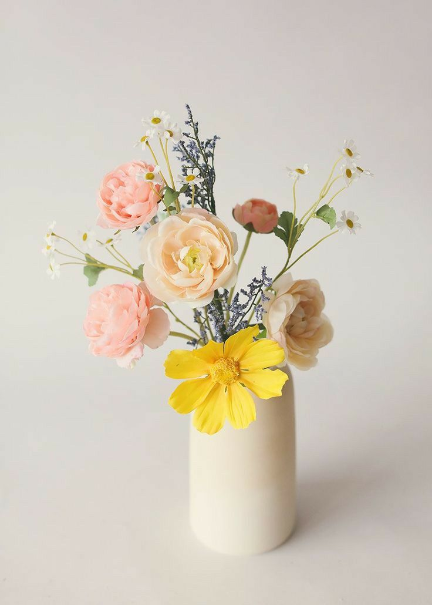

Petal & Poem
One flower, a living sonnet, blooming with the poetry of the wild.
Delicate as a whisper and sweet as a daydream, Marshmallow Dream is a bouquet woven from the gentlest hues of pink and white. Like clouds tinted by the first light of dawn, these soft blooms evoke a sense of serenity, romance, and tender affection. The blush-toned flowers symbolize warmth and admiration, while the pure white blossoms embody grace and sincerity, blending into a vision of ethereal beauty. Perfect for celebrating love, expressing heartfelt emotions, or adding a touch of enchantment to any space, Marshmallow Dream whispers of fairy-tale moments and cherished memories. A gift of pure elegance, it lingers in the heart like a sweet and gentle embrace.
Petal & Poem
Guardians of Time: Gentle Care Guide
Bouquet Inspiration
Soft as a dream, Marshmallow Dream is inspired by pastel skies and the gentle sweetness of love, creating a delicate, fairy-tale charm.
Perfect For
An ideal choice for romantic gestures, baby showers, or simply bringing a touch of elegance to any space, this bouquet is pure and timeless.
Flower Composition
A delicate mix of soft pink and white flowers embodies grace, tenderness, and heartfelt emotions, perfect for expressing affection.
Order & Delivery
To maintain the bouquet freshness, flowers are delivered in a hydration wrap. Pre-orders are recommended for custom requests.